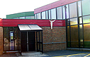

|
Parish
News
|

|
| As our school building is attached to St Margaret Ward Church, we have very strong links to the parish and church events.We are therefore including a page on our website which provides a few brief details of our Parish, along with the times of Mass and other church services. |
| Father
Ned Wall has been our Parish Priest since September 2007. Following his ordination,Father Ned was based in parishes in Stockport and Birkenhead before he took up his next appointment, this time in Peru,South America, where he worked for over ten years. In addition to our own parish of St Margaret Ward, Father Ned is also Parish Priest of All Saints and Our Lady of Lourdes. He is assisted by Deacons Anthony Caffrey and John Conway. |
|
Sacramental Programme
- each
year, a number of our children from Year 3 make their First Forgiveness
and First Holy Communion at St Margaret Ward Church. |
| Saturday | 6:30pm (Vigil) Mass (with children's Little Church) | |
| Monday |
9:15am Eucharistic Service | |
| Tuesday | 9:15am Mass | |
| Wednesday | 9:15am Eucharistic Service | |
| Thursday | 7:30pm Mass | |
| Friday | 9:15am Eucharistic Service | |
| Saturday | 12 Midday Mass |
Our school *Foundation * School calendar * Fun page * Friends * Recent events * Sports * Gallery * Parish * Parents Page